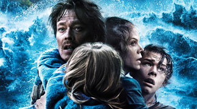

 Informações sobre o Filme: Tempo de Duração: 104 Minutos País: Noruega Idioma: Norueguês Lançamento: 28 de Agosto de 2015 Gênero: Ação, Drama, Thriller Classificação: 12+ Estreia no Brasil: 28 de Agosto de 2015 Título Original: Bolgen Direção: Roar Uthaug
Resenha Crítica
O vilarejo de Geiranger, um dos pontos turísticos mais visitados da Noruega e também patrimônio mundial da UNESCO, é retratado na obra como centro de uma tragédia que acontecerá futuramente. Kristian trabalha no centro de monitoramento das montanhas desse vilarejo e na véspera do dia que iria mudar-se de cidade com sua família, o centro registra movimentações estranhas dessas montanhas, o que o faz ter um mau pressentimento e adiar sua viagem. Na noite desse mesmo dia, outros movimentos são detectados, fazendo-os chegarem à conclusão de que haveria um deslizamento e a população tinha apenas 10 minutos para se retirar da cidade e ir para um local seguro. O filme retrata a aflição das pessoas ao verem ondas de mais de setenta metros se aproximarem e tomar conta do vilarejo, destruindo tudo que estava pela frente, matando milhares de pessoas. Por ser baseado em fatos que irão acontecer, pode-se tê-lo como um prognóstico de como isso afetará a vila e a população local. Esse local, hoje em dia, é monitorado diariamente e a cada ano as fissuras do Akener se expandem quinze centímetros. É uma obra bem elaborada que expõe o funcionamento natural do planeta e isso inclui tragédias como a do ocorrido. Pesquisadores e estudiosos, sabem que esse deslizamento é inevitável e podem imaginar os danos que ele causará. No entanto, muitas pessoas não têm conhecimento desses fatos e filmes como esse podem trazer à população uma maior conscientização do quão grave podem ser acontecimentos do tipo, podendo ser útil até em prevenções de outras catástrofes causadas pela interferência humana. Ao tratar-se de desastres ambientais, a película se encaixa como um bom exemplo a ser citado, principalmente, pelas consequências e impactos que esses acontecimentos podem causar.
Temas Propostos
Desastres Ambientais Naturais: